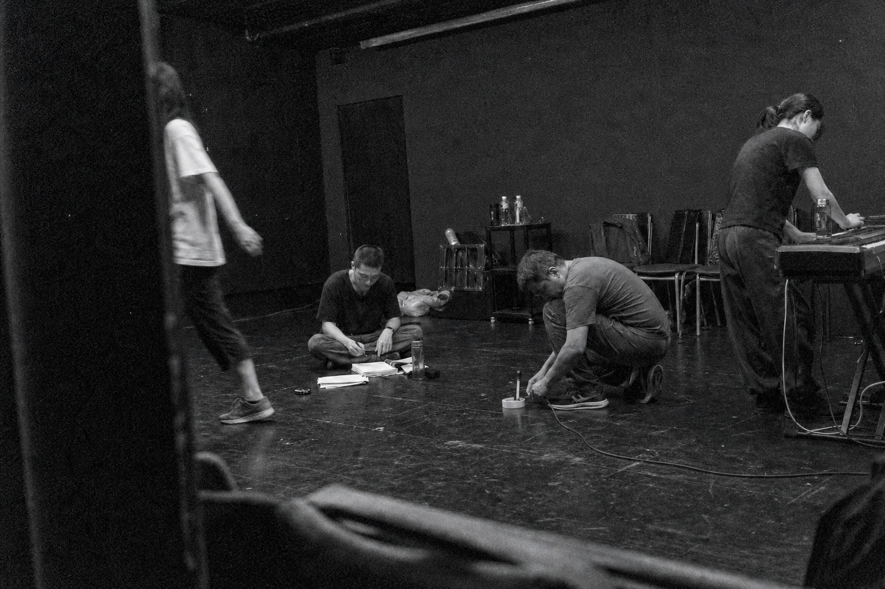

網頁版
2 / 7
01
SCENE I · 05 / 16
失眠者的房間
THE ROOM OF THE WAKEFUL

凌晨兩點十七分，城市的潮聲穿過沒有關緊的窗。黎安坐在地板上，把同一段旋律反覆彈了十九次。
《潮聲未眠》從一個很小的問題開始：如果一座城市不再做夢，還有誰會替它記得曾經失去的人？我們把排練場分成三條看不見的岸線，演員每一次跨越，都會讓樂句產生一點偏移。
第一場沒有完整的歌。鋼琴、呼吸與鞋底摩擦地板的聲音先建立節奏，直到角色願意說出名字，旋律才第一次被聽見。
「我們不是為了醒著而醒著。
只是海還沒有把最後一句話說完。」 — 黎安，第一場
這一章的網頁版保留紙本閱讀的停頓：照片不是滿版背景，文字也不急著塞滿螢幕。觀眾在開演前，可以先知道人物、曲目與情緒入口；演出結束後，再回來讀完創作脈絡。